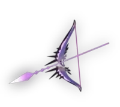
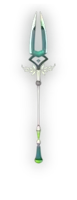

| Picture | Name | Unlock Condition | Former Wielder | Level Stats | Other Aspects | Description |
|---|---|---|---|---|---|---|
| "Stygius" / Stygian Blade | Unlocked by default | Poseidon | Level 1: 3% Boost / 1 Titan Blood Level 2: 6% Boost / 1 Titan Blood Level 3: 9% Boost / 1 Titan Blood Level 4: 12% Boost / 1 Titan Blood Level 5: 15% Boost / 1 Titan Blood | Aspect of Nemesis Aspect of Poseidon Aspect of Arthur | The blade's default attack pattern is a three-swing long combo consisting of a mixture of wide and directional swings. The special creates a small burst around you after a short jump, and leaves you stationary for a short time. | |
|  | Coronacht, the Heart-Seeking Bow | Unlocked with Chtonic Key (1) | Hera | Level 1: 2% Crit Chance up / 1 Titan Blood Level 2: 4% Crit Chance up / 1 Titan Blood Level 3: 6% Crit Chance up / 1 Titan Blood Level 4: 8% Crit Chance up / 1 Titan Blood Level 5: 10% Crit Chance up / 1 Titan Blood | Aspect of Chiron Aspect of Hera Aspect of Rama | Repeated long-range stab attacks that can be charged to unleash a spin attack dealing high damage in a wide radius. The special throws the spear, which will damage enemies along its path until it stops. Activating special again recalls the spear, which will deal damage on the way back. |
| Aegis, the Shield of Chaos | Unlocked with Chtonic Key (3) | Zeus/Athena | Level 1: 5% Damage Reduction / 1 Titan Blood Level 2: 6% Damage Reduction / 1 Titan Blood Level 3: 7% Damage Reduction / 1 Titan Blood Level 4: 8% Damage Reduction / 1 Titan Blood Level 5: 10% Damage Reduction / 1 Titan Blood | Aspect of Chaos Aspect of Zeus Aspect of Beowulf | The main attack is a single swing that hits in an arc and knocks enemies back. Holding the attack button will block damage from the front, while charging the "Bull Rush". Releasing this will perform a shield bash forwards, dealing damage to enemies hit. The special throws the shield, which bounces between enemies and objects before returning. | |
|  | Varatha, the Eternal Spear | Unlocked with Chtonic Key (4) | Hades | Level 1: 10% boost / 1 Titan Blood Level 2: 14% boost / 1 Titan Blood Level 3: 18% boost / 1 Titan Blood Level 4: 22% boost / 1 Titan Blood Level 5: 25% boost / 1 Titan Blood | Aspect of Achilles Aspect of Hades Aspect of Guan Yu | Repeated long-range stab attacks that can be charged to unleash a spin attack dealing high damage in a wide radius. The special throws the spear, which will damage enemies along its path until it stops. Activating special again recalls the spear, which will deal damage on the way back. |
| Malphon, the Twin Fists | Unlocked with Chtonic Key (8) | Demeter | Level 1: 5% more Dodge Chance / 1 Titan Blood Level 2: 8% more Dodge Chance / 1 Titan Blood Level 3: 10% more Dodge Chance / 1 Titan Blood Level 4: 13% more Dodge Chance / 1 Titan Blood Level 5: 15% more Dodge Chance / 1 Titan Blood | Aspect of Talos Aspect of Demeter Aspect of Gilgamesh | Fast repetitive short-range combo attacks using fists in close-quarters combat. The special is an uppercut that hits twice. This weapon is unique due to it being the only Infernal Arm with a dash-special; if the special is used while dashing it will uppercut faster but only hit once. | |
| Exagryph, the Adamant Rail | Unlocked with Chtonic Key (8) | Hestia | Level 1: +4 Max Ammo Count / 1 Titan Blood Level 2: +6 Max Ammo Count / 1 Titan Blood Level 3: +8 Max Ammo Count / 1 Titan Blood Level 4: +10 Max Ammo Count / 1 Titan Blood Level 5: +12 Max Ammo Count / 1 Titan Blood | Aspect of Eris Aspect of Hestia Aspect of Lucifer | Automatic or manual fire (depending on whether Attack is pressed or held) that must be reloaded once all ammo is used. The special launches a grenade to bombard the target area, which takes a short time to arrive but deals damage in an area once it lands. |
All text comes from this website